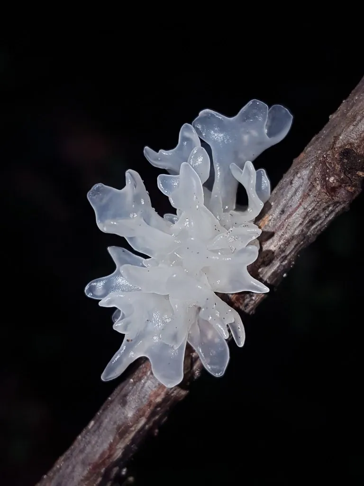

真菌 · 真菌界
银耳 Tremella fuciformis

银耳的胶质子实体洁白如雪、呈半透明状，是传统的滋补食用菌，常用于炖煮甜品，如今多为人工栽培。
- 分类
- 门担子菌门纲银耳纲目银耳目科银耳科属银耳属
- 栖息环境
- 阔叶树枯木与人工菌袋，喜温暖湿润、通风和散射光
- 地理分布
- 原产中国与东亚，现中国福建、四川等地大规模栽培
- 保护级别
- 暂无评估（栽培食用菌）
物种志
银耳是担子菌门银耳目的胶质真菌，子实体由许多瓣片组成，整体呈菊花状或牡丹花状，直径 5–15 cm，鲜时洁白半透明、柔软有弹性，干后收缩呈淡黄色硬块。瓣片薄而皱褶，表面有子实层，担孢子近球形，孢子印白色。银耳没有明显的菌盖和菌柄，整个子实体都是胶质结构，吸水后能膨胀很多倍。
野生银耳生长在阔叶树的枯木上，对温湿度要求很高，产量稀少，历史上曾是名贵贡品。中国是银耳的主要栽培国，福建古田、四川通江等地是著名产区；现代栽培多用木屑或棉籽壳菌袋，并需要与香灰菌等伴生菌共同培养，才能正常出耳。银耳富含银耳多糖、膳食纤维和多种氨基酸，口感滑糯，常与莲子、红枣、枸杞一起炖成甜汤；银耳多糖被认为有免疫调节和润燥作用。
形态与习性
- 子实体菊花状胶质瓣片，直径 5–15 cm
- 颜色鲜时洁白半透明，干后淡黄色
- 孢子印白色
- 栽培需与香灰菌等伴生菌共同培养
- 采收期瓣片完全展开时
- 主要成分银耳多糖与膳食纤维
- 干制干后收缩成淡黄色硬块
趣味知识
- 银耳其实没有菌盖和菌柄，整朵都是胶质的瓣片。
- 人工栽培银耳常需要香灰菌伴生，才能顺利长出子实体。
- 银耳炖煮后胶质浓稠，冷却后凝成冻状，是银耳多糖的特性。